Jag påbörjade inmatningssystemet för hemsidan med värdeinmatning för varje storhet som kan användas. Dessutom skapade jag skriptet samt en knapp som kallar på det.
Jag lade till skript-kod för att föra över de inmatade värdena till variabler i funktionen med hjälp av querySelector som sökte efter unika ID som jag gav till vaje input. Dessutom skapade jag en radio-input för att hämta den sökta variabeln samt skript-kod för att lagra den i en variabel. Dessutom påbörjade jag en funktion som skriver om en formel och bryter ut den sökta variabeln. Den ger tillbaka en lista av strängar på alla relevanta formler.
Jag fortsatte på skriptet. En 2-dimensionell lista som innehöll varje formel och dess storheter. Dessutom skrevs en kort bit kod som filtrerade ut oanvända storheter. Sedan påbörjades koden för att söka efter en formel som kan ge ett svar. Vid denna tidspunkt var algoritmen väldigt simpel och kombinerade inte formler. Den sökte enbart igenom alla storheter i alla formler och struntade i en formel om minst en storhet inte fanns i angivna storheter.
Här skrev jag om radio-inputen för den sökta variabeln då den tidigare gav hela namet (såsom "mass") medan resten av programmet använde förkortningarna (såsom "m"). Därför bytte jag deras värde till förkortningarna. I skriptet gjorde jag en nödvändig omskrivning för att den skulle fungera korrekt. Tidigare kollade jag bara om alla kända storheter fanns i formeln som jag sökte. Vid detta tillfälle lade jag även till en filter funktion som filtrerade ut formler som inte innehöll den sökta storheten. Däremot fungerade detta inte korrekt då koden som kollade om varje storhet i varje formel fanns i kända storheter. Eftersom den sökta storheten fanns i varje av dessa men inte i kända storheter blev varje formel nekad även om den hade svaret. Jag lyckades inte hitta ett svar på detta problem.
Jag skrev om listan med alla formler och dess storheter till ett objekt som vars key är en sträng på formeln och value är den gamla listan på varje storhet i formlen. Eftersom variabelinhämtningen av kända variabler tog deras värde medan sökfunktionen kollade efter deras namn behövde jag skriva om koden så att den gav namnet om den hade ett värde. Här flyttade jag även över sökfunktionen till en seperat funktion. Här löste jag tisdagens problem genom att lägga till en check som kollade om den nuvarande storheten var den sökta storheten och isåfall strunta i den. Nu påbörjade jag även den komplexa delen av projektet. Den rekursiva funktionen för att kombinera formler om det inte fanns någon lösning med bara en formel. Den gick vid detta lag igenom varje möjlig formel och alla okända storheter i dessa formler och sökte efter en formel för en. Detta ledde alltid till en "Maximum call stack size exceeded"-error och gav mig ett av de största problemen under detta projekt. Detta var inte ett programmeringsproblem utan ett logiskt problem. Slutligen utökade jag funktionen för att bryta ut och skriva ut formler.
Detta tillfälle blev det inte mycket kod skriven. Jag försökte lösa torsdagens problem med en flowchart. Därför spenderade jag en stor del av tillfället med detta. Den var långt ifrån perfekt men det var mycket lättare att följa och implementera den än koden jag tidigare hade skrivit. Här skrev jag om koden som gav en lista av möjliga formler genom att inte ha med formler som innehöll en variabel som tidigare hade testats. Det här var det som krävdes för att fixa problmet med "Maximum call stack size exceeded". Även fast det inte gav ett error efter det gav den inte tillbaka korrekta formler när den behövde kombinera formler. Här kombinerade jag även funktionen för att hitta formler och rekursivt söka efter formler då det bara är en rekursiv länk. Efter den gjort den första loopen i funktionen och innan den går över till att kombinera formler läggs den sökta variabeln till i en "triedVariables"-lista som håller reda på de storheter som har testats och används i filtreringen för möjliga formler som jag beskrev innan. Här skrev jag om den rekursiva sökningen för att bara söka efter formler där ingen storhet finns i "triedVariables". Slutligen lade jag till ett antal "return false;" för att ge representera att det inte finns en lösning på problemet.
Jag gjorde inte mycket vid detta tillfälle. Jag skrev om funktionen som skriver om formler för att hantera variabler i den istället för på varje ställe när man kallar på den, vilket är det jag hade gjort tidigare.
Här fortsatte jag att få den rekursiva funktionen och fick den nästan att fugera. Den nya koden skrev om formeln vars storheter skulle bli sökta för att bryta ut den sökta formeln. Sedan söks det efter en ny formel och om den finns ersätts alla instanser av den gamla formeln's sökta storheter med den nya formeln innan den skickas tillbaka. Det här fungerade inte men det blev väldigt nära lösningen. Slutligen förbättrade jag funktionen som skriver om formler för att den ska fungera bättre med resten av koden genom att bland annat returna false om den får en false input. Detta lades till för att den ska kunna skicka igenom false från funktionen som hittar formler till main som använder formeln. Dessutom böt jag ut alla else mot else if för att false alltid ska skickas tillbaka om den får en false formel.
Här fixade jag till slut problemet med den rekursiva funktionen. Det enda som inte fungerade efter förra tillfället var att den gick igenom funktionen som skriver om formler både före och efter return. Detta skrevs om till att bara göra det före vilket fixade problemet. Dessutom lade jag till resterande formler och returns i funktionen som skriver om formler. Slutligen skrev jag om formatet som returnas genom att ta bort "x = " i början av den omskrivna formeln. Detta underlättar användningen enormt då det nya formatet kan stoppas in direkt i uträkningen där det ska användas utan någon anpassning.
Vid detta tillfälle skapade jag för det första två nya objekt. Det första har storheter som keys och deras respektive SI-enheter som values. Den andra är ett 2-dimensionellt objekt vars keys är storheter och values är ett objekt som består av storhetens olika enheter som keys och vad dessa ska multipliceras med för att omvandla det till SI-enheter som value. Vid detta tillfälle skrev jag även helt om input-systemet. Istället för att kolla om dess number-input har ett värde har jag lagt till en separat checkbox-input för varje storhet och gav dem value-attributen med deras namn. Därför skrev jag även om skriptet med en querySelectorAll och en map för att ta varje value hos markerade checkboxar. Detta gör exakt samma sak som tidigare men på ett effektivare sätt och som är lättare att expandera. Jag lade även till några select-element som låter en välja vilken enhet som den inmatade datan använder. I skriptet skrev jag sedan en indexOf för att kolla om den sökta storheten finns i kända storheter och isåfall skriver ut resultatet. Jag lade även till så att den skriver ut resultatet om den får tillbaka en formel från funktionen som hittar formler. Den loopar igenom all formler som den har fått och alla kända storheter. Där byter den ut storheten mot det inmatade värdet i number-input multiplicerat med den valda enhetens omvandlingsfaktor som finns i det andra objektet. Detta går igenom en eval för att få ett slutgiltigt numeriskt värde. Den skriver ut resultatet genom en querySelector som väljer output-elementet och lägger till ett p-element i det som beestår av det uträknade enheten och dess SI-enhet som hittas genom det första objektet. Slutligen lade jag till två CSS-filer för att det skulle se bättre ut. Den första är reset.css som är tagen från internet och gör de flesta element mer konsekventa och lättare att använda. Den är lite modifierad av mig för att göra exakt det jag vill. Den andra innehåller layouten för hemsidan och består av 2 grid-displays. Den första innehåller kalkylatorn till vänster och formlerna till höger. Den andra är inputen och består av fyra rader. Den första är den sökta storheten, den andra är de kända storheterna, den tredje är de kända storheternas värde och den fjärde är de kända storheternas enhet. Det var efter det här som jag skickade ut hemsidan för feedback.
Feedbacken jag fick handlade mest om layout och skript. De största felen var ett par problem som den inte kunde lösa och designen för inputs. Skriptet var lätt att fixa, det var bara att byta ut en replace-funktion mot en replaceAll-funktion då vid ett fåtal tillfällen uppkom samma storhet flera gånger och med replace ersattes bara en vilket ledde till en error då den försökte köra eval. Dessutom lade jag till en extra check som kollade om en känd storhet inte har ett angivet värde och säger det till användaren. Detta implementerades så att resultatet inte blir bland annat "Nan kg". Den sista skript-ändringen jag gjorde var att jag bytte ut "m/s**2" till "m/s^2" då det är en mer konventionell ändring. Förändringarna jag behövde göra inom layout och design var däremot mycket större. Klagomålen jag fick inom detta område var att grid-kolumnerna och grid-raderna inte var lika långa. Dessutom blev jag rekommenderad att flytta allt med kända storheter till en kolumn istället för tre. Slutligen fick jag också feedbacken att hemsidan inte var mobilanpassad. Jag kunde fixa allt med några få ändringar. För det första bytte jag ut den yttre grid-displayen till en flexbox med flex-wrap på wrap och flex-direction på row. Detta ser till att formellistan kan flyttas ner under input-området på smalare skärmar. Den inre bytte jag ut till en table med 7 tr-element. En för varje storhet. För att samla ihop allt angående kända storheter lade jag i varje tr-element 2 td-element. En för sökt storhet och en för allt angående kända storheter. För att fixa problemet angående att de var olika bredd gav jag select en konstant width på 75px. Sedan högerjusterade jag all text i tr-element. Här stötte jag på ett problem med att den inte applicerade det. Problemet är att jag använde >-selectorn. Den gäller för element som är direkt i ett annat element. Jag hade skrivit "tr > td" vilket jag trodde skulle fungera eftersom mina td-element ligger direkt i tr-element. Däremot skapar browsern automatiskt en tbody tag mellan. Därför bytte jag ut det till "tr td" som väljer td-element i tr-element. Även om de inte är direkt i. Slutligen ändrade jag tr-selectorn till "tr:not(:first-of-type)" så att den inte väljer titlarna på toppen.
Här var det bara några småsaker som jag fixade. Först tog jag bort lite onödig CSS som jag hade glömt bort tidigare. Jag kopierade även den tidigare koden om att inte skriva ut "NaN" till stycket som skriver ut den sökta storheten om den också är med i kända storheter.
Jag tog bort en till bit oanvänd CSS som jag hade missat.
Vid detta tillfälle ändrade jag portfoliot för att lägga till en bild för projektet. Jag upptäckte även några problem med skriptet. Ett av problemen var att kombinationen av formler blev fel då operationsordningen inte var korrekt. Detta var en lätt lösning genom att lägga till parantesar runt allt som funktionen som skriver om formler returnar. Jag var även tvungen att lägga till lite extra logik om att skicka tillbaka tid i en formel då det kräver olika uträkningar beroende på indatan. Slutligen tog jag bort formeln "s=v*t" då dess definition av v är olika från de andra formlerna. I "s=v*t" är den konstant medan i resten är det hastigheten i slutet av mätningen. Dessutom bytte jag ut en replace mot en replaceAll i den rekursiva sökningen på grund av samma anledning som förra gången. Utöver det skrev jag kod för att hantera tillfällen när man får flera lösningar och fixade ett litet problem angående bytet från "m/s**2" till "m/s^2". Jag hade glömt att byta det på ett ställe vilket ledde till fel.
Jag fick lite yttligare feedback angående att det är svårt att förstå hemsidan. Därför lade jag till ett p-element om vad hemsidan gör och hur den fungerar.
Under denna kategori skrev jag vad hemsidan kan användas till. Även om detta inte var till någon användning medan jag skrev projektet så anser jag att det slutgiltiga resultatet uppfyller just detta. Därför anser jag att projektplaneringen var bra inom denna aspekt.
I projektplaneringen ligger beskrivningen under kategorin "Ingående beskrivning". Däremot skulle jag inte säga att den var så ingående utan istället relativt ytligt angående varje del ska göra utan någon förtanke om hur detta ska ske. För koden och dess logik skulle jag anse att flowcharten som jag nämnde tidigare hade varit ett bra tillägg till planeringen. Utöver koden skulle jag anse att beskrivningen om sidans innehåll var ännu glesare. Det enda jag hade skrivit angående input var att den skulle ta input för sökt och kända storheter. I slutändan lade jag dessutom till värde och enhet till det. Slutligen var beskrivningen angående layout och design icke existerande. Som jag nämnde tidigare så hade jag en väldigt bristfällig uppfattning om hemsidans innehåll vilket jag anser är anledningen till att jag inte hade någon uppfattning om sidans layout och design då jag helt enkelt inte visste exakt vad som skulle vara på hemsidan. Det är så klart helt möjligt att göra en hemsida med bristande beskrivning och planering utan att det påverkar slutresultatet. Däremot leder det definitivt till att den första verisionen av hemsidan kommer vara av lägre kvalité och att för att nå slutresultatet kommer mer behöver göras om och fler timmar spenderas.
Här kommer den mer detaljerade beskrivning om hur jag ska göra specifika saker. Den är fortfarande inte så detaljerad som jag nu vill. Jag beskriver HTML-koden som extremt simpel med "några bara några sections och hn" samt "bara ta några minuter". Detta var helt fel. Det var inte extremt komplicerat men inte heller så simpelt som jag beskrev. Jag nämnde absolut ingenting angående table-elementet som jag slutligen använde.
Min planering angånde input var mer realistisk. Jag visste inte hur jag skulle göra det innan så planeringen var passande. Jag sa att det skulle vara lätt, och det var relativt lätt. Jag tyckte att planen att börja med det var bra då det gav mig tid att lära mig det. Så klart blev det inte perfekt när jag skrev koden men det är förväntat att man förbättrar en ny förmåga med tiden.
Planeringen angående CSS-koden var väldigt kort vilket stämmer med tanke på hur mycket CSS-kod jag skrev. CSS-koden var simpel. Det enda ens lite komplexa var följande selector "& tr:not(:first-of-type)".
Planeringen om MathML skulle jag också anse vara relativt bra. Den är kort men det är inte mycket att skriva om heller. MathML är lätt att skriva om inte lite irriterande då VSCode inte autofyller element men så fort man har skrivit några kan man bara kopiera och klistra för att snabba på det.
Planeringen för Javascript om att söka efter en formel var också lite väl kort men ändå ganska passande för koden. Det var en liten bit kod för att filtrera bort onödiga formler, två for-loopar och en if-sats.
Planeringen för enhetsomvandling är också väldigt passande. Det är ett objekt och med lite list-indice och en querySelector får man ut svaret.
Planeringen angående att kombinera forlmer är jag helt nöjd med. Den beskriver exakt hur jag slutligen valde att lösa problemet på genom att ha en lista med de storheter jag redan har testat. Det enda från den delen av planernigen som jag inte följde var att ha det som separat funktion. Det fungerade helt bra med det som en funktion.
Planeringen om att skriva om en formel är också bra. Som jag skrev är det en stor mängd if-satser. Det enda jag inte tänkte på var att bryta ut tiden från en formel då den skrivs olika beroende på vilka värden som är 0. Detta var bara några if-satser och querySelectors.
Planeringen om att räkna ut formelns värde var däremot inte helt korrekt. Jag lyckades inte hitta funktionen som jag skrev om men det var bara en for-loop, en replaceAll och en eval så det var inte ett problem att det var fel.
Överlag anser jag att planeringen var för kort, framförallt inom HTML och CSS och det påverkade hur mycket energi och tid jag behövde lägga ner på att få ett resultat med acceptabel kvalité. Om jag hade gjort om det hade jag utökat planeringen om layout och design. Helst genom att rita upp det. Dessutom borde jag ha gjort flowcharten jag tidigare nämnt från början för Javascriptets logik.
Jag skulle anse att min tidsplanering var överlag bra och jag tror att den hade fungerat bra om jag hade följt den. Jag låg bakom de första två veckorna men tog igen det under vecka 49. Möjligtvis hade jag flyttat över lite programmering av hemsidan till vecka 49 då resten av den veckans saker inte har tagit så mycket tid.
Jag körde hemsidan genom w3's validering och fick bara "Trailing slash on void elements has no effect and interacts badly with unquoted attribute values". Detta är inte ett problem då detta inte har någon påverkan och är något som Prettier-Autoformatter lägger till automatiskt och enligt validatorn är det acceptabelt i följande situationer:
- ✅ I use a trailing slash because I like how it looks.
- ✅ I use a trailing slash because I run my HTML markup through a formatting tool that’s hardcoded to add trailing slashes to all void-element start tags, without any option for me to prevent the tool from doing that.
- ✅ I use a trailing slash because I write a lot of JSX code, and JSX requires the trailing slash — without any option for me to prevent JSX from doing that — so for consistency with what I’m accustomed to in JSX, I follow that same style in actual HTML documents.
Jag frågade 5 personer inom min målgrupp och fick en stor mängd från 3 av dem.
Jag skulle rekommendera att du ahr ett mellanrum mellan bokstäverna och ifyllningsfältet, på samma sätt som du har gjort i de andra kolumnerna.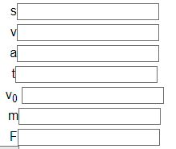
Det här var en del av ett större problem. Jag fixade inte det på exakt samma sätt som feedbacken sa. Däremot tog jag istället bort bokstäverna när jag grupperade ihop det med resten av alla inputs.
Det skulle också vara snyggt om du hade en kolumn för bokstäverna och en annan för ifyllningsfälten/alternativen, så att de inte är några pixlar till höger och vänster. T.ex. så sticker ju V0 och dess ruta ut.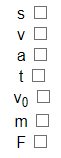
Detta fixade jag inte direkt men eftersom jag sköt all text så långt till höger som jag kunde så är knapparna rakt över varandra.
Detta är nog en ltie smaksak, men jag tycker det ser bättre ut med ^ istället för **.
Det ändrade jag på, jag använde ** från början då jag trodde det skulle användas i koden (då Javascript använder ** för upphöjt medan verkligheten använder ^) men när jag fick feedbacken gick jag igenom koden så såg jag att den inte användes för någon uträkning och ändrade på den.
Du får också gärna göra att alla raderna är på samma höjd.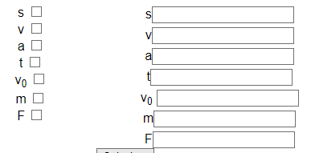
När jag bytte ut grid till table så fixades detta automatiskt.
Detta borde den kunna lösa.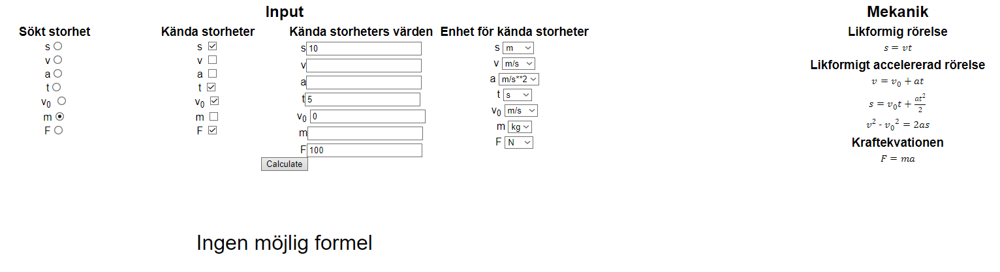
Jag vet inte exakt vad som orsakade just detta problem men när jag löste ett annat problem längre ner angående replaceAll så löstes detta också.
Jag märker också att om jag också fyller i att jag har V, så får jag svaret NaN kg, men när jag sedan bockar bort V så ger den mig fortfarande svaret NaN kg. Om jag däremot bockar bort något mer, t.ex. t, så säger den att det inte går att räkna ut och när jag sedan bockar i t igen så säger den fortfarande att det inte går att lösa.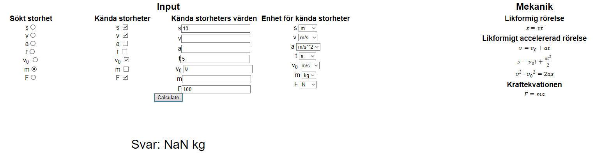 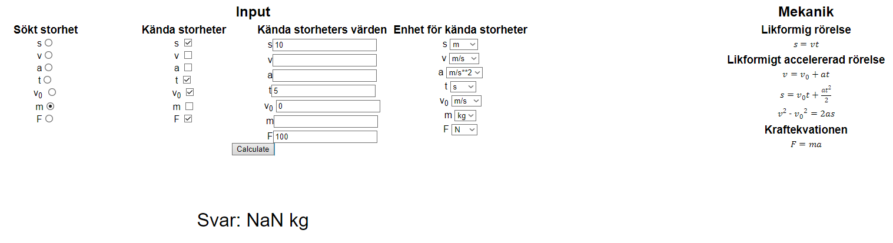 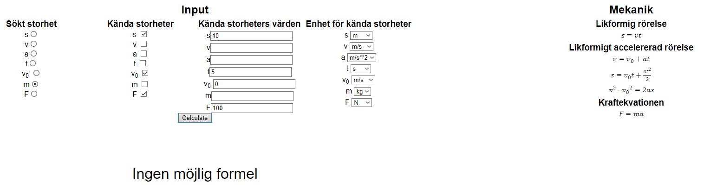 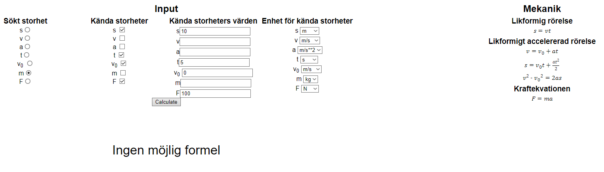
Kortfattat: Jag får två olika svar beroende på min tidigare uträkning.
Det här var ett problem med replaceAll. När den andra uträkningen kördes så innehöll den flera av en viss storhet och eftersom replace bara byter ut den första fanns det bokstäver kvar i uträkningen när eval körs. Därför fick Javascript en error, uträkningen blev aldrig färdig och svaret uppdaterades inte. Jag fixade det med att byta ut det med replaceAll.
Jag skulle också föredra om denna knappen hade lite andningsrum istället för att ligga dikt an med indatan.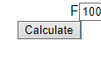
Jag har en bredare skärm och därför hamnade knappen mellan två kolumner. På grund av det märkte inte jag att de inte hade något mellanrum mellan sig. Jag fixade det genom att lägga till lite margin.
Detta problemet uppkommer igen här då den fortfarande säger 10kg även fast jag nu har ändrat den efterfrågade variablen till a.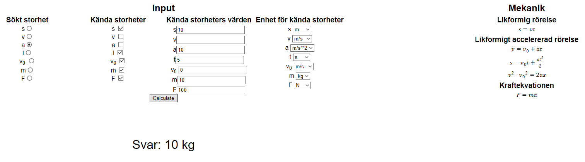
Det spelaar inte heller någon roll hur många gånger jag genomför uträkningen och jag kan återskapa samma bug flera gånger.
Detta var bara en kommentar på det tidigare problemet om replace och replaceAll
Håller med Winroth om att raderna borde vara på samma höjd. Sedan tycker jag att det hade varit mer tydlig om rutan där man väljer enhet var precis brevid rutan med värdet (som jag ritat på bilden)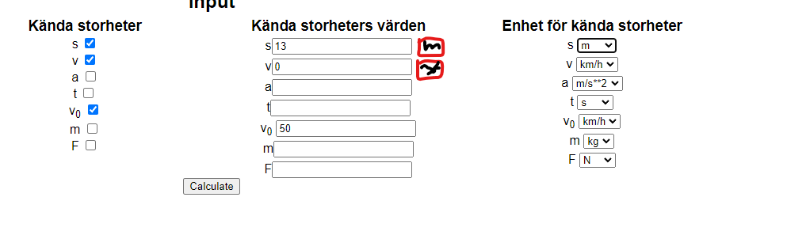
Sidan är inte heller mobilanpassad, men förstår såklart att det är drygt att fixa. Annars tycker jag sidan var bra och den fungerade för att räkna ut mina exempel jag testade
Som jag tidigare sa flyttade jag raderna till samma höjd genom att byta till table. Det angående rutan med enhet valde jag att göra genom att sätta alla de i samma table cell. Mobilanpassningen fixades genom att ge den flex, flex-row och flex-wrap så att formlerna kan hamna under kalkylatorn om skärmen är för smal.
Ja skulle uppskatta en förklarande text på webbsidan eftersom det inte framgår vad sidan gör. Jag uppskattar den mer konventionell beteckning för potenser, ex. s^2 används istället för s**2 som det var först.
Detta fixade jag genomn att lägga till ett p-element med en kort beskrivning om hemsidan som berättar vad den gör och hur man använder den.
Jag testade designen på Safari, Chrome, Microsoft Edge och Firefox utan några problem. Med tanke på att jag inte satt någon speciell stil på majoriteten av sakerna på hemsidan använder den för det mesta standardvärdena på dem. Eftersom varje webbläsare hanterar det lite annorlunda så skiljer det sig lite visuellt mellan dem men inget som påverkar kvalitén på ett betydande sätt.
Jag har personligen testat hemsidan på följande upplösningar utan några stora visulla fel:
Dessutom har även svagare enheter prestandamässigt inga problem med att hantera hemsidan och använda kalkylatorn.
GDPR bestämmer hur användares data hanters såsom samling och lagring. Med tanke på att denna hemsida inte hanterar användares data överhuvudtaget bryter hemsidan mot GDPR. Angående upphovsrätt är det enda på hemsidan som jag inte skapat själv formlerna. Upphovsrätt skyddar skapade verk. Formler är då inte skyddade av lagen och därför bryter inte hemsidan mot upphovsrätten.
Majoriteten av koden är relativt simpel. Däremot är funktionen för att hitta en formel komplex då det är en rekursiv funktion. En rekursiv funktion är en funktion som kallar på sig själv. Den börjar med att definera "possible_formulas" som består av alla formler som innehåller den sökta storheten men som inte innehåller någon redan sökt storhet. Sedan loopar den igenom alla formler i possible_formulas. I denna loop är en till loop som kollar om varje storhet i formeln finns i kända storheter. Om en storhet inte gör det försöker den med nästa formel. Om alla storheter finns skriver den om den för att bryta ut den sökta storheten och sedan skickar den tillbaka. Fungerar ingen formel läggs den sökta storheten i en annan lista "triedVariables". Sedan loopar den igen igenom varje formel i possible_formulas där den sedan loopar igenom varje storhet som inte finns med i kända storheter men som inte heller innehåller någon storhet i triedVariables. Om det finns en sådan formel bryts det sökta värdet ut. Sedan kallas den rekursiva delen fast med den saknade storheten som sökt storhet. Sedan byts den saknade storheten ut i formeln i loopen innan den skickas tillbaka. Om den går igenom alla formler utan att hitta någon skickas false tillbaka vilket representerar att ingen formel fungerar. Att skriva en rekursiv funktion som skickar tillbaka rätt sak och sedan korrekt tar hand om detta är definitivt på den svårare sidan.
function findFormula(knownVariables, search, triedVariables) {
let possible_formulas = Object.values(variables_in_formulas).filter(
(formula) =>
formula.indexOf(search) != -1 &&
triedVariables.every((x) => formula.indexOf(x) == -1)
);
outer: for (let i of possible_formulas) {
for (let j of i) {
if (knownVariables.indexOf(j) == -1 && j != search) {
continue outer;
}
}
return rewriteFormula(i, search);
}
triedVariables.push(search);
outer: for (let i of possible_formulas) {
for (let j of i.filter(
(x) => knownVariables.indexOf(x) == -1 && x != search
)) {
if (triedVariables.indexOf(j) != -1) {
continue outer;
}
i = rewriteFormula(i, search);
let new_list = [];
let new_formula = findFormula(knownVariables, j, triedVariables);
if (!new_formula) {
return false;
}
for (let k of i) {
for (let l of new_formula) {
new_list.push(k.replaceAll(j, l));
}
}
return new_list;
}
}
return false;
}För att lättare förstå och skriva detta använda jag följande flowchart för att lättare förstå exakt vad som skulle skrivas:
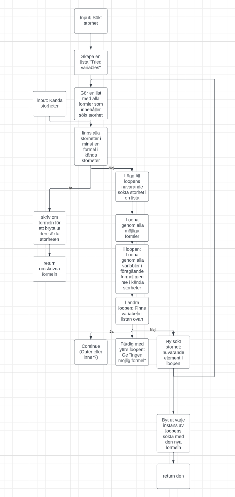Jag har inte använt någon guide eller tutorial för detta projekt. Däremot har jag självklart använt internet för korrekt använding av enstaka funktioner och dylikt. Bland annat map, filter, flexbox och grid.
Detta projekt använder inte serverside-kod och all kod är skriven av mig själv. Därför har jag full förståelse av vad koden gör och ingen del har utgör en säkerhetsrisk för användare eller mig själv.
Jag anser att jag uppnår ett A i betyg. Detta är vad skolverket utger att betygskriteriet A är:
Eleven beskriver utförligt och nyanserat webben som plattform samt gör en välgrundad och nyanserad jämförelse med flera andra alternativ.
Eleven gör en genomarbetad projektplan för en tänkt produkt, vid behov reviderar eleven planen. Utifrån projektplanen utvecklar eleven efter samråd med handledare produkten där logiker som styr innehåll, design och beteende i omfattande utsträckning är åtskilda. I arbetet utvecklar eleven kod som med gott resultat följer standarder och som omfattar flera tekniker för märkspråk och stilmallar där eleven i omfattande utsträckning använder tekniker för att generera stilmallskod. I arbetet bearbetar eleven med gott resultat och via flera moment text, bild och eventuell annan media så att de blir anpassade för att fungera i produkten. Eleven utvecklar med gott resultat funktionalitet inom något eller några av områdena domskript, interaktiv 2D-grafik, 3D-grafik eller animationer. I sitt arbete inkluderar eleven flera funktioner av komplex natur från ett klassbibliotek eller ramverk inom områdena design eller skript.
Produkten är av god kvalitet när det gäller funktion vilket eleven kontrollerar med hjälp av flera tester, även manuella. Dessutom kontrollerar eleven med säkerhet produktens tillgänglighet med automatiserade tester och simuleringar samt manuella tester. Eleven vidtar optimeringar av bilder och andra mediafiler för att åstadkomma snabb överföring av dessa och vidtar åtgärder för att reducera antalet överföringar per sida.
När arbetet är utfört gör eleven en noggrann och utförlig dokumentation av de moment som har utförts med koppling till generella principer och testresultat samt utvärderar med utförliga och nyanserade omdömen sitt arbete och resultat samt ger förslag på hur arbetet kan förbättras. I utvärderingen resonerar eleven kring eventuella avvikelser samt motiverar utförligt de val som har gjorts. Eleven redogör utförligt och nyanserat för innehållet i lagar och andra bestämmelser som rör publicering på webben samt följer dem i sitt arbete. Dessutom för eleven välgrundade och nyanserade resonemang kring webbrelaterade frågor om etik och integritet. Eleven tar hänsyn till säkerhetsaspekter i sitt arbete och i fråga om produkten samt kontrollerar produktens säkerhet med flera tester. Eleven använder med säkerhet terminologi inom området.
Grundat på detta anser jag att jag uppnår ett A i betyg. Jag anser att projektplanen är genomarbetad. Den är definitivt reviderad efter behov. Dessutom anser jag att kvalitén är god vilket jag stödjer med resultaten från testningen. Den automatiserade testningen visade inga problem och den manuella testningen som utfördes av medlemmar av målgruppen hade få problem, varav alla är åtgärdade. Slutligen anser jag att att dokumentation är noggran och utförlig då jag tagit upp och bemött alla punkter utförligt och nyanserat. Dessutom anser jag att relevant terminologi har använts på ett korrekt sätt.